|
2010年1月环洞庭湖图片日记
day2(part A), 2010年1月27日
沅江市 - 南县（茅草街）
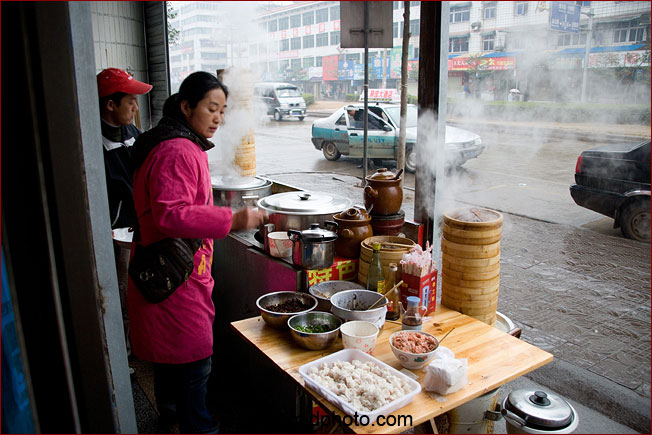
早上出发前就在资阳酒店隔壁的小店吃早餐
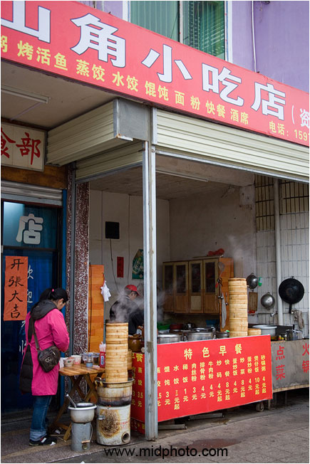
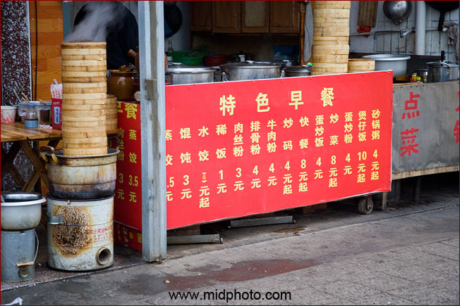
很便宜啊
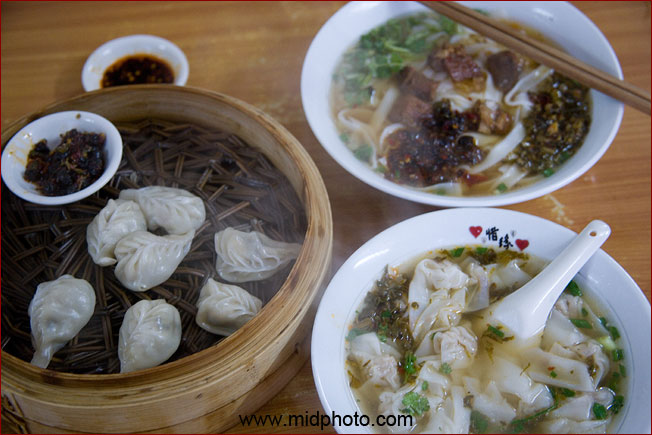
味道也非常好。有饺子、米粉，馄饨。爽呆了。亏得我们昨晚还走那么远，早知道就在这吃，就不会遇到恶心的猪毛肉了
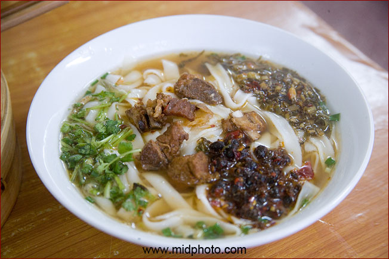
米粉。店主自制的酸菜和辣椒酱非常好吃
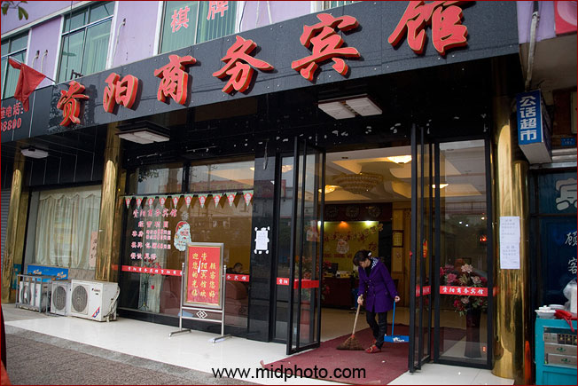
资阳宾馆。不予推荐。
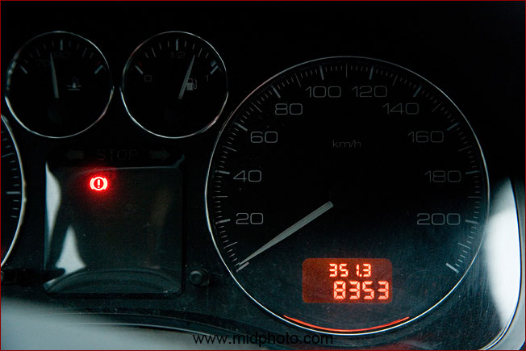
昨日行程，8353-8205 = 148公里
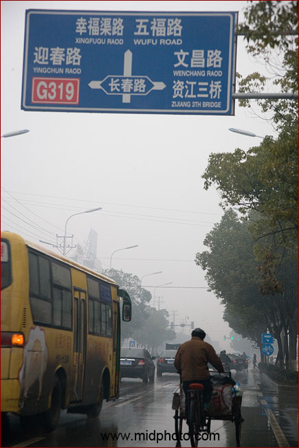
益阳，雨天
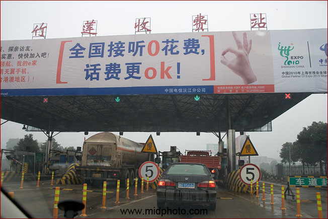
过竹莲收费站，进入沅益（沅江-益阳）一级公路
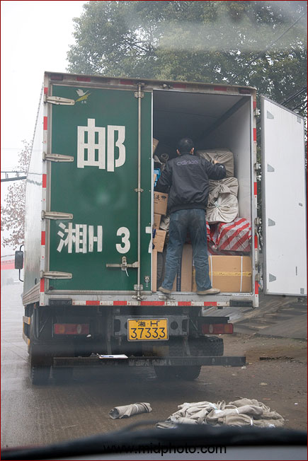
我不想走一级公路，我要尽量往小道上走，于是拐进老沅益公路（省道204）。路况较差，车也非常少。遇到一辆邮政车，包裹都是扔下来的。唉，不够敬业啊。易碎物品最好不要邮寄。
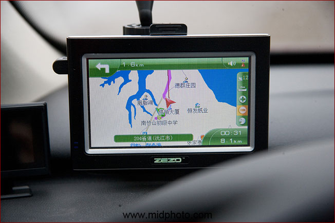
继续前行。GPS开始出现很多水面。看来接近洞庭湖了。
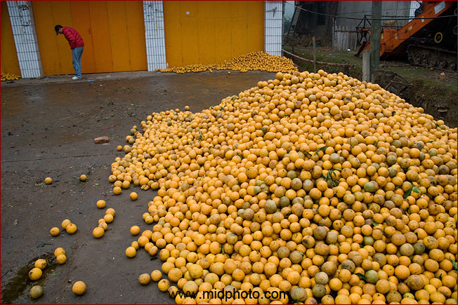
路边很多快腐烂的臭皮干，一种介于桔子和柚子之间的果子。
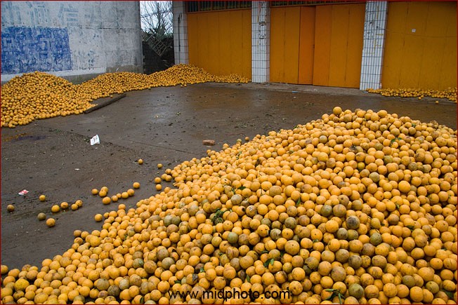
住家说这东西一般不好吃，都用来做罐头。但貌似今年收成过于好了，堆在路边烂了。

继续接近洞庭湖。大片蓝色。

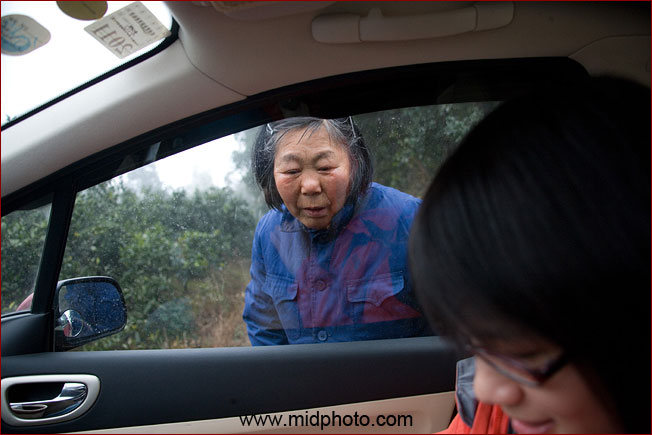
正停车休息，忽然来了一位大妈紧。貌似智障人士。害怕啊，赶紧逃窜。
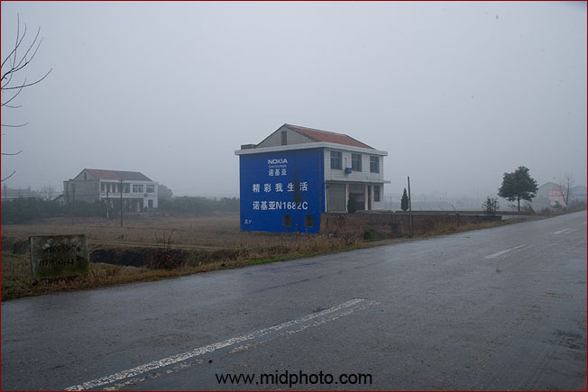
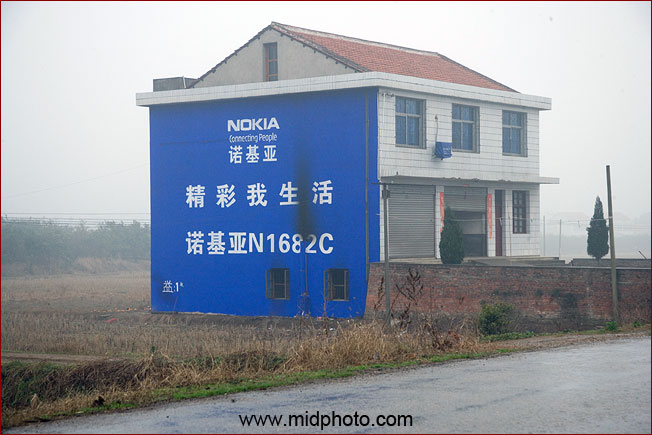
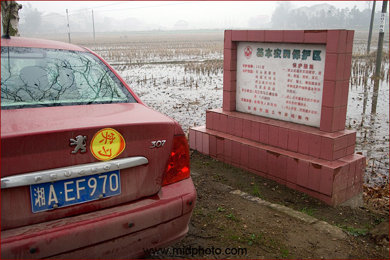
本人也是7年的老驾驶员了。为了拍照，也为了节约汽油，我开得很慢，还随时停车，实在危险，所以弄了一个实习牌，好让后面的司机别生气。
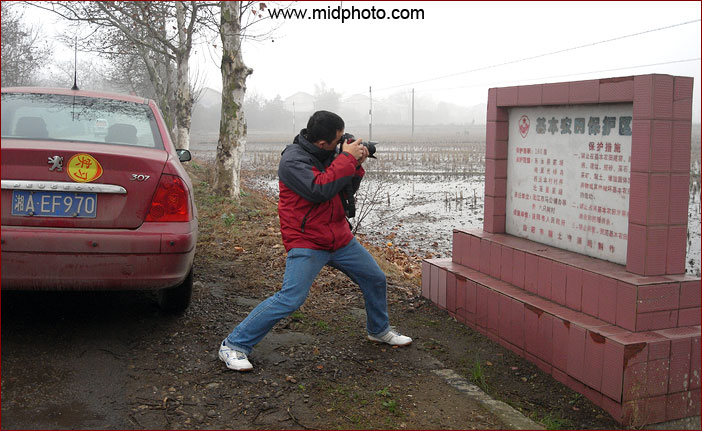
this picture was shot by Yan.
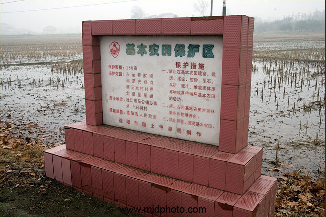
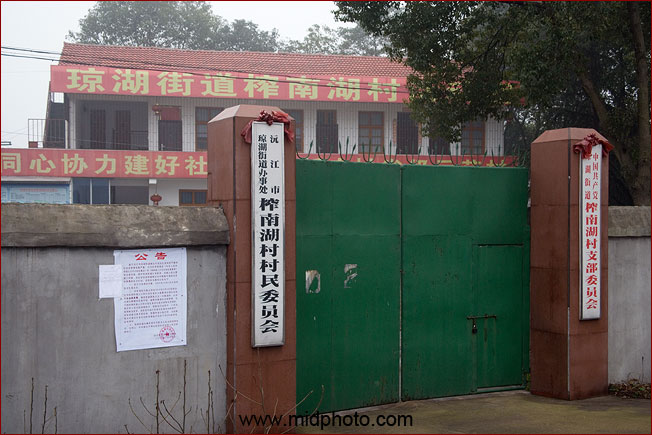
村委会
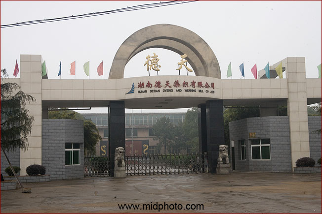
村委会隔壁

我不想走沅江白沙大桥，走了小道前往白沙渡口

沅江
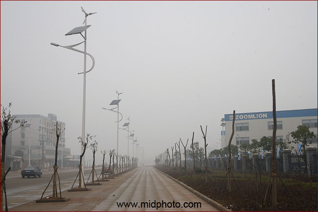
沅江的太阳能和风力联合发电的路灯。
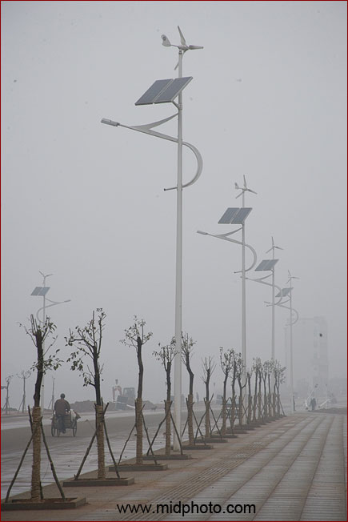
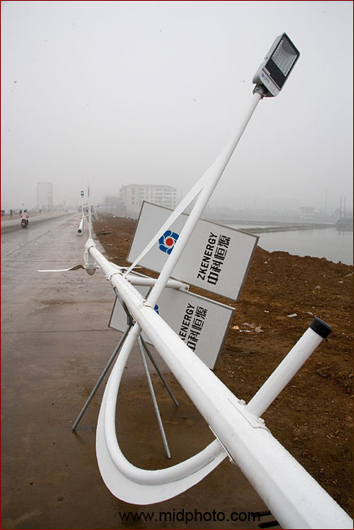
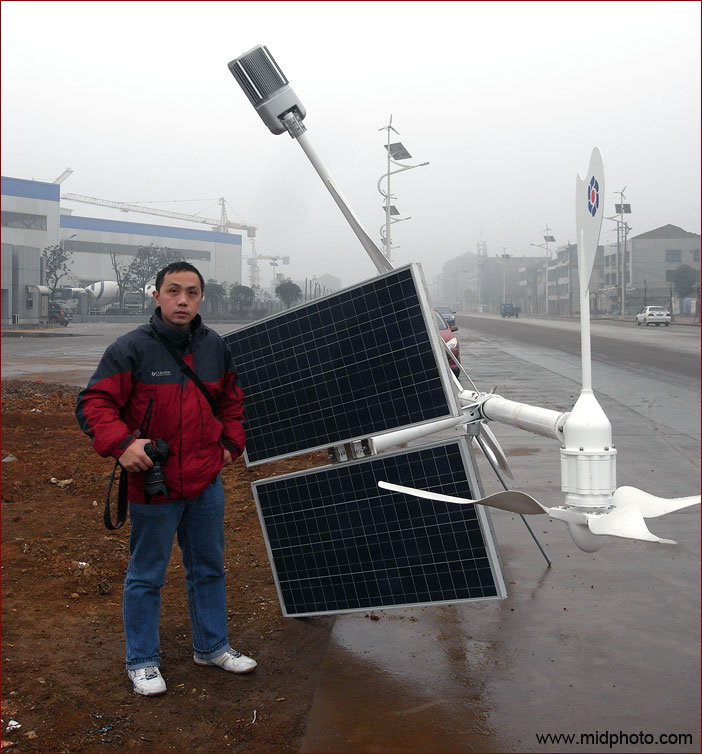
this picture was shot by Yan.
|
当前栏目:新闻中心>沅江快讯>
2009年12月3日 作者:root 沅江启动太阳能风力路灯照明工程
近日，沅江市投资1200万元的新源大道太阳能风力路灯照明工程正式启动。该路段的46盏路灯全部采用太阳能与风力装置。据推算，通过应用太阳能风力照明，此路段每年就能节约电费10多万元。这种再生环保能源路灯在照明过程中，无噪声、无气味、对环境无任何污染。
该市城建开发投资公司负责人表示，今后的城区道路新建和扩改工程路灯配套设施都将采用此类环保型再生能源发电用于道路照明，并逐步向全市各建制镇和新农村建设示范村进行推广。（通讯员
卢达军）编辑 胡爱民 |
如果是这个价格的话，我觉得沅江市政府被骗了。1200万46个路灯？120万还差不多。在淘宝上这种路灯系统也就一万多块钱一个。这个中科恒源公司不知是不是骗子。
我认为目前技术条件下太阳能是没有钱途的。一个美国海龟的发言供参考：
“多晶硅光伏的最大问题是净发电量为负。制造一套多晶硅光伏系统（提炼多晶硅，稳压升压一套，蓄电系统等）所需能量和这套系统使用寿命能发的全部电能差不多。这还有个专门术语，叫ERORI（Energy
Return On Energy Invested)。我所在的Arizona州在沙漠中，一年330天晴天，对太阳能却没有特别优惠，原因就在Sandia国立实验室和ASU关于光伏的
ERORI的报告。
我认识一海归在国内搞光伏厂，前几年搞得很红火，国家投了不少钱。前年春节他回来（他太太孩子都在美国），在一party上我问他国内光伏为什么会什么火，难道他们不知道光伏的REORI是负的，发的电还不如净消耗？他说的确决策人不懂。他说你不能指望人人都是物理博士（我和他都是物理博士，还都是凝聚态方向的，不过我后来又念了个Computer
Engineering的博士改行给大家设计CPU了）。
正是因为多晶硅光伏的最大问题是净发电量为负，欧美才喜欢向中国出口相关技术，让中国来生产，他们来使用。中国的官员则喜欢把能耗和污染留给中国，让光明照亮美利坚，毕竟前者越大意味GDP越高。”
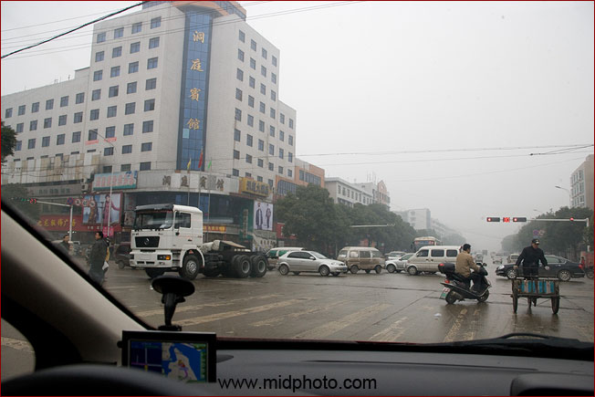
第一次看见洞庭湖的字：洞庭宾馆（沅江）
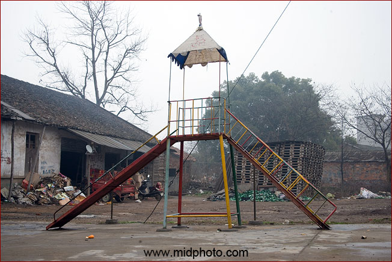

前往白沙渡口

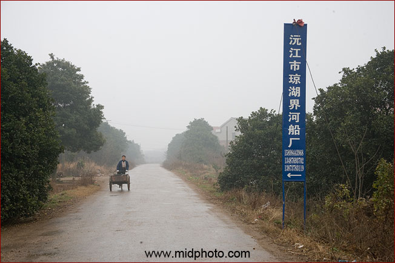
路过造船厂。
除了偶尔的板车和三轮车，路上一辆汽车也没有。我觉得这渡口有点问题。
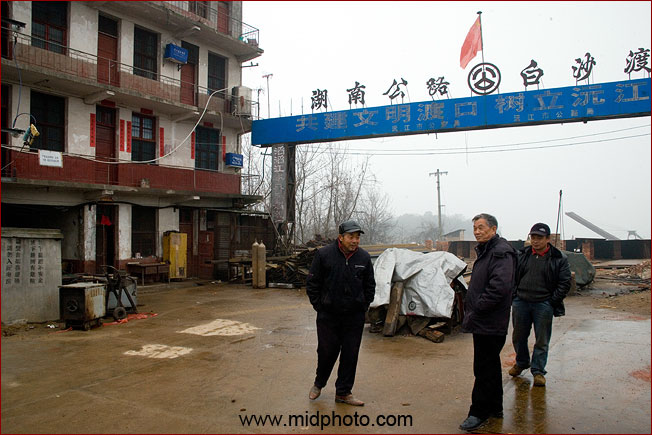
果然这渡口在2003年就废弃了
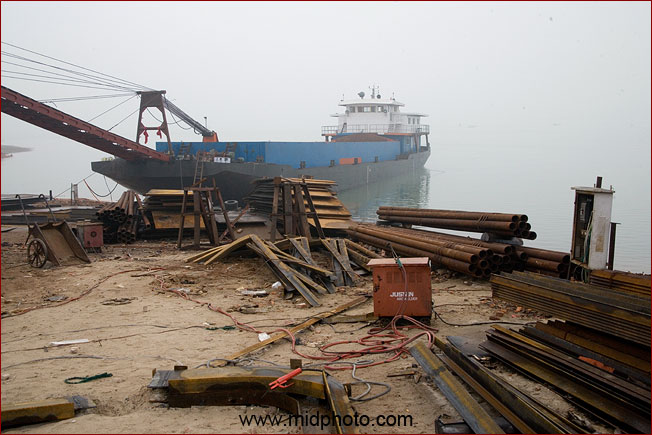
渡口变成了造船厂
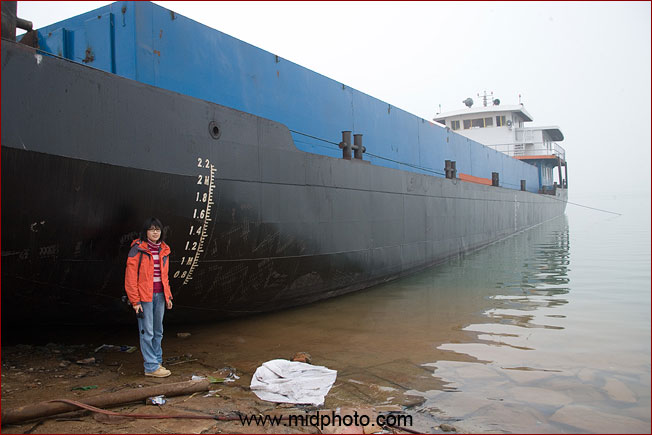
大船啊。我估计千吨级以上。这就是南洞庭湖，激动啊。出来两天终于第一次见到湖水了，我顺便把鞋子小洗了一下。后来一想，不该接触湖水，有血吸虫。
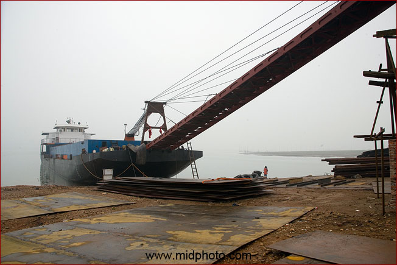
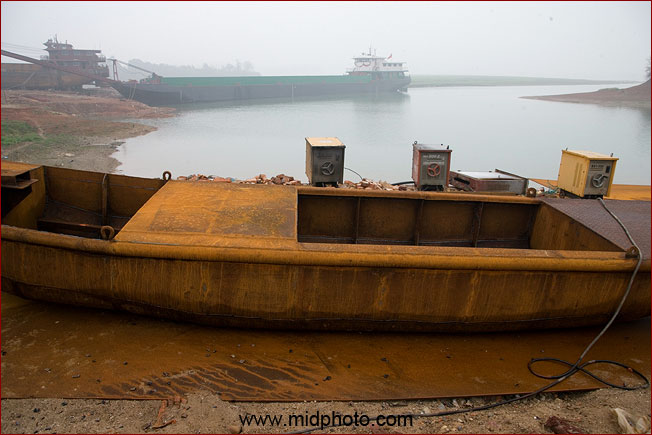

渡口坟墓
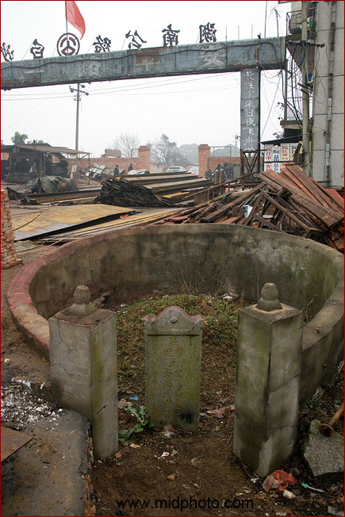
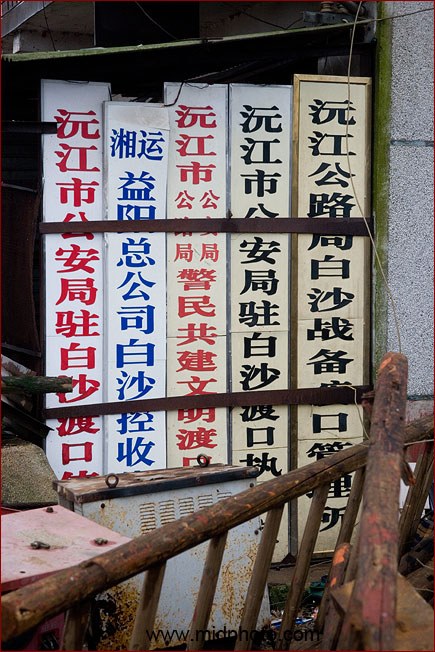
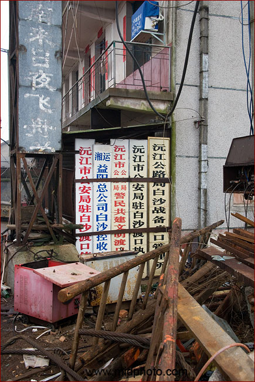

无路可走了


只得原路返回沅江市区，走白沙大桥。
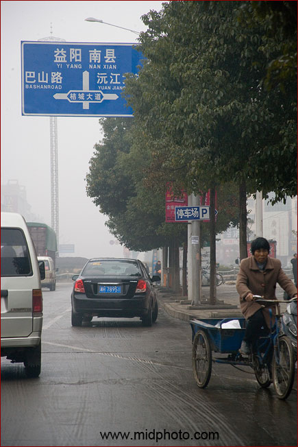

沅江东方巴黎
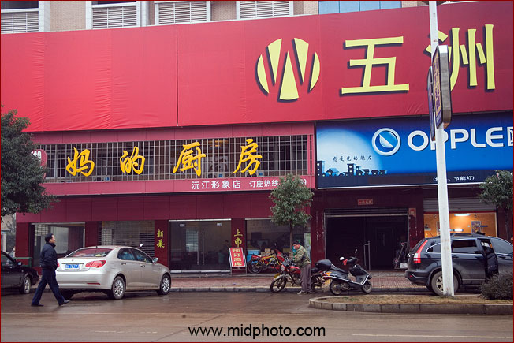
妈的厨房
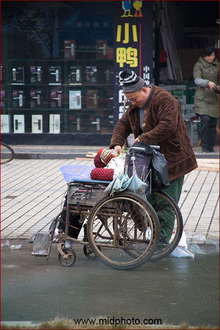
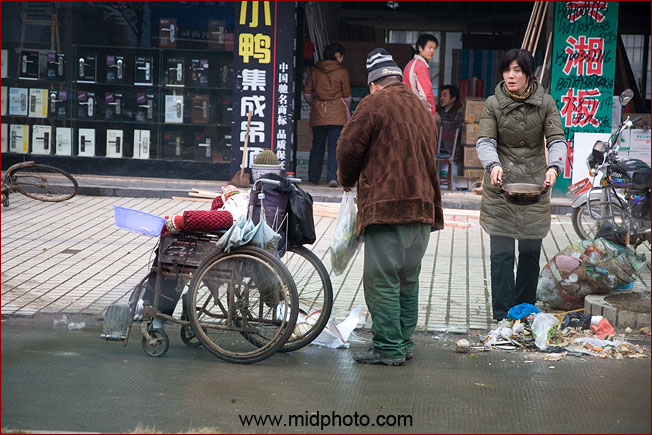
一对老人，一个是残疾的，在捡路边垃圾里的菜吃
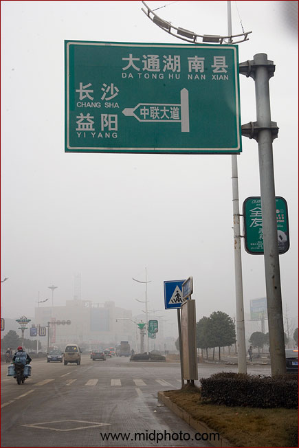
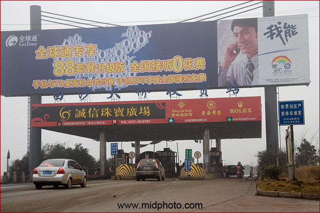
白沙大桥收费站
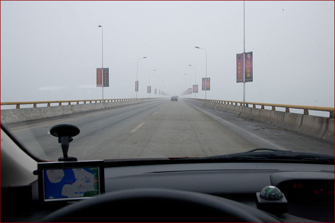
白沙大桥。白沙大桥的左边是西洞庭湖的目平湖（属汉寿县），右边是南洞庭湖的白沙湖和东南湖
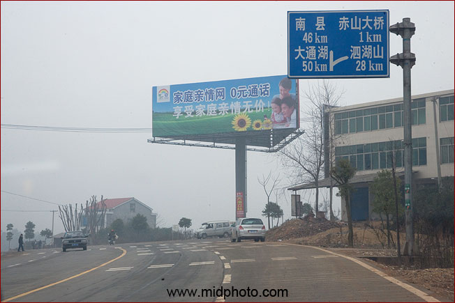
过了桥，前往南县
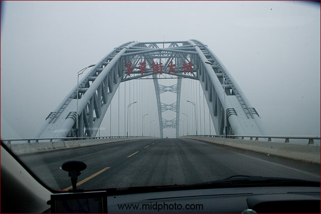
到达洞庭湖重镇茅草街。澧水入洞庭湖的地方。茅草街大桥位于南县茅草街轮渡口，2007年4月1日建成通车，是省道1831线跨越洞庭湖松澧洪道的特大型桥梁，属洞庭湖区畅通工程中的省级重点工程。大桥全长7579．7米，总投资
3．763亿元，主桥桥型为三跨连续自锚中承式钢管拱桥（俗称“飞鸟式”）。其主跨368米，为我国同类型桥梁单孔跨径第一，宽跨比为世界第一。
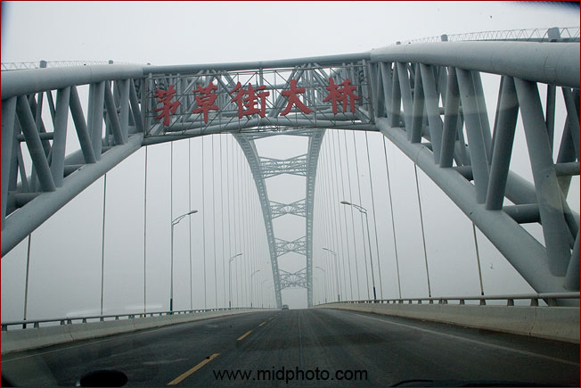

|